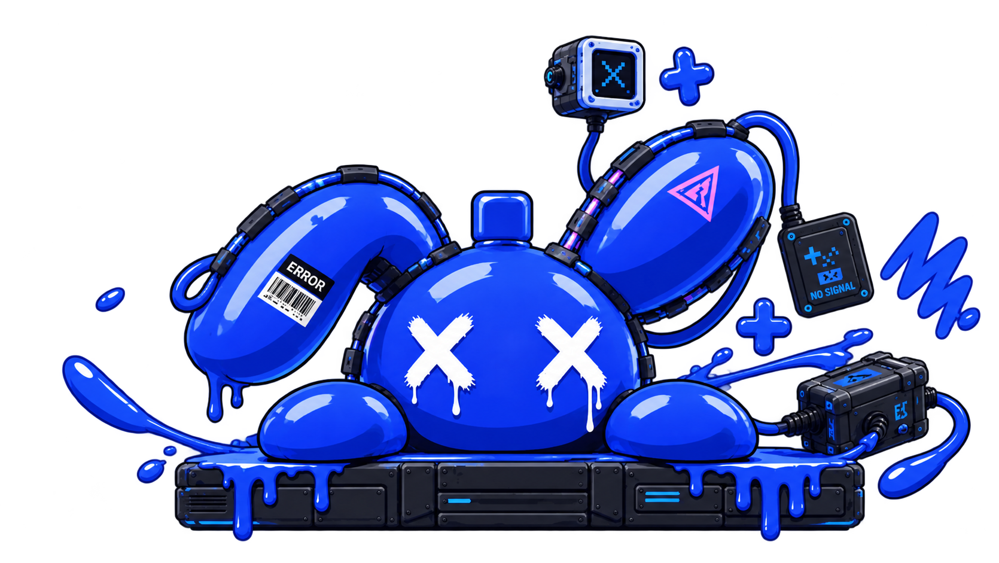

Собственные проекты
Здесь собраны мои приложения и макеты интерфейсов.
Воплощаю свои дизайны в жизнь,
чтобы они приносили не только красоту,
но и пользу людям.

Здесь собраны мои приложения и макеты интерфейсов.
Я разрабатываю дизайн и использую ИИ для написания кода и поиска ошибок.
Создаю приложения для планирования и повседневных задач.
Начинаю с задачи, разрабатываю интерфейс и затем перехожу к коду.
Проверяю результат и исправляю то, что мешает пользоваться приложением.
Выбираю повседневную задачу и ищу способ решать её удобнее.
Продумываю действия пользователя, рисую экраны и проверяю их в работе.
Планирование жизни в одном пространстве - с задачами, привычками и ассистентом EVE.
RE:FORM LIFE - проект приложения для задач, привычек и месячного планирования с ассистентом EVE.
Задачи и события на месяц.
Планирование и учёт личных дел.
ИИ-ассистент, предусмотренный в проекте.
Этот экран показывает визуальную часть проекта. Путь от идеи к продукту продолжается через проверку сценариев, работу с кодом и уточнение деталей.
Нахожу задачу в повседневной жизни и думаю, как сделать её проще.
Собираю референсы, строю каркас интерфейса и разрабатываю дизайн.
Подробно описываю задачу ИИ и с его помощью создаю работающее приложение.
Проверяю приложение, исправляю ошибки и делаю его удобнее для людей.
Описываю ИИ задачу, проверяю предложенный код и тестирую результат.
Нужные функции легко найти.
Действия понятны и не требуют лишних шагов.
Единый стиль кнопок, экранов и текста.
Приложение помогает решить конкретную задачу.
Нет. Это мои проекты. Я занимаюсь дизайном и использую ИИ при разработке.
RE:FORM LIFE для планирования и Blaze для виджетов рабочего стола.
ИИ помогает писать код и искать ошибки. Дизайн и проверку результата я делаю сама.
Другие проекты можно посмотреть на GitHub ↗. Написать мне можно в Telegram ↗.
Напишите мне удобным способом или оставьте сообщение на сайте.